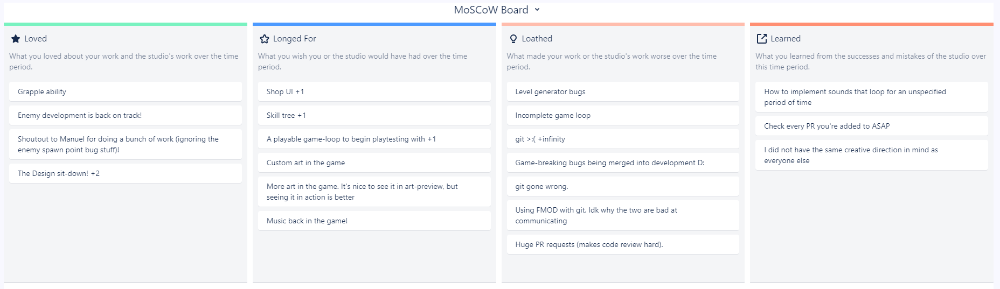
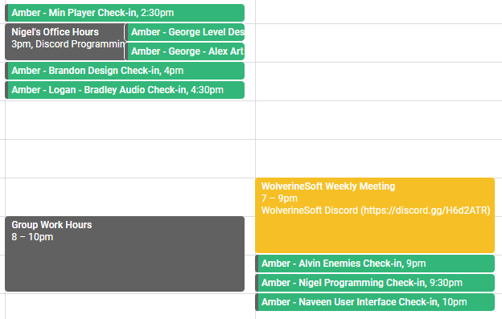

These past two weeks of the studio project have been particularly hectic. Going through all this has been a lot of work, and has involved a lot of painful lessons. As a testimony to how much work maintaining our current structure has been, I still don't feel that I'm doing nearly enough. There's no question that this experience has been incredibly valuable, but for the sake of longevity, we may need to consider other structural options for the future once studio veterans begin to graduate.
Studio-wide & Leads Meetings
Much of this section is standard and very similar to the last sprint. Over the past 2 weeks, I've run 2 leads meetings, each on Saturdays. The meeting on 2/27 was a typical ~2 hours, with 1 hour of prep time. However, the meeting on 3/6 lasted much longer. This is due to several reasons: namely, we had a long work session at its end to create tasks for the Pre-Alpha III sprint, and also, an old studio lead (Nico Williams) spent quite a bit of time afterwards engaging in additional discussion and providing advice.
I may have forgotten to mention this in my previous dev-blog, but a new strategy I'm employing this semester involves frequent retrospectives. An example of a 4-Ls retrospective done at a leads meeting this sprint is shown below.
As for studio-wide meetings, these presentations were also standard and very similar to what I detailed in the previous dev blog. As such, in the future, I won't go into as much detail on the process of preparing for and attending these. However, I have embedded a progress video I recorded from mid Pre-Alpha II below.
Creating a Sprint Plan & Design Sit-Down
A tremendous issue the studio has been facing this semester has been the communication of Design information to the rest of the studio. In previous semesters, this problem was not nearly as present. I've spent a lot of time deliberating over why this might be. Two big reasons off the top of my head are listed below:
- Individual designers this semester have more control in fundamental project decisions now than ever. This means members must often wait for vital decisions & documentation to be produced before being able to complete tasks, because given that these choices lie with "regular" members (as opposed to leads, who are typically more committed), delays are significantly more frequent.
- We're working off what is pretty much an entirely novel pitch this semester. As a result, there's no simple reference we can point people to when they're confused about the identity of Project Cloud. Instead, we can only direct them to our design documentation, which is mostly dense and text-heavy. I would generously assume that only around 40% of studio members are willingly caught up on our Design docs.
Somewhat at a loss, I scheduled a meeting with Nico Williams and Matt Rader (two studio veterans - producer and design director, respectively, on multiple past studio projects) to discuss these issues and how I might be able to go about resolving them from a production perspective. This meeting lasted several hours and was immensely helpful for clearing my head. From there, I was able to develop and execute an action plan.
I discussed these issues at great length with our Design director for this semester, and we arranged a Design "sit-down" for studio leads. This took place in the evening on Friday 3/5, and contained a high-level overview of every mechanic and planned feature for Project Cloud, as well as a thorough description of minute-to-minute gameplay. This meeting was recorded and is embedded below.
In order to relieve the Design director of his tremendous burden in carrying and dispersing Design information, I spent around 7 hours configuring Confluence, digging around our Design documentations, our Jira tasks, and our Bitbucket project. The product of this was a very long Confluence page with specifically outline plans and projected tasks for our next sprint. This page can be found here.
A huge portion of time at the leads meeting after our Design sit-down took place was dedicated to having leads revise this page and translate it into Jira tasks. Although our process was not perfect, I do believe it expedited and increased the efficiency of task creation by a great deal. I set an explicit expectation that, from now on, leads are to read the design documents posted in #design-preview regardless of whether or not the contents are directly related to their subsection of the project. The hope is that leads will now remain caught up with the design of the project.
Leads 1 on 1s & Miscellaneous Meetings
Another component of my "action plan" has involved scheduling a weekly 30-minute sit-down with effectively every department director and pod lead of the studio. This week, I only went through 1 cycle of sit-downs (as they were instituted mid-sprint). These 1-1 check-ins occur on Wednesdays and Thursdays at the following times.
I take extensive notes at this meetings to help keep updated with progress across the project. The notes for this sprint's 1 on 1 meetings can be found here and here. Although these do take quite a while to get through, they assist heavily in my overall knowledge of the project and ability to fulfill my role in production.
I've also spent a lot of time listening in on various non-weekly meetings. For example, the enemies pod met in the evening on Thursday 3/1 to discuss the second enemy's design, which I listened in on (both to make sure I was in the loop, and to take any questions if necessary). I make an effort to attend most meetings when possible. Another point of member feedback has been a desire for more organized group work hours, so I scheduled the loose weekly hours of 8-10 PM ET on Mondays, Wednesdays, and Fridays to serve as such. Although I wasn't able to make Monday or Friday last week, I stayed through 8-10 PM and after on Wednesday with several others in our Working voice chat.
Player HUD & Other
Finally, I did spend quite a bit of time helping to mock-up a visual player HUD wit proper canvas scaling. Although my place isn't to do direct project work, I was able to help with setting this up for a few hours. The final result of my rough mock-up can be seen below.
I won't go through and list every little other thing I did this past 2 weeks, but among them include corresponding with absent members and the logistical overhead of arranging meetings and sending announcements. Although I don't count this as a studio contribution (it is not reflected in my hours count), I was able to arrange and attend another meeting with Seven Siegel from Epic Games. The possibility of doing an Unreal Engine game project in the summer grows larger, and the potential of establishing a precedent for collaboration between Unreal and the University of Michigan is excitingly real.

Final Thoughts
I usually wouldn't include a section like this as this entry has gotten very long already, but I feel I'm not doing justice to describing the state of the project with what I've written above. The project is overall doing quite well, but we've encountered some severe setbacks along the way that are frankly still causing me a bit of concern.
Several members have encountered severe git issues, most likely a result of commits made by members without git LFS installed. This could call for a fix as drastic as migrating the project to a completely new repository. Additionally, several pods have run into large and demoralizing problems. Due to a lapse in communication, our first enemy was created with scripts incompatible with the Unity navmesh system; redoing these scripts caused a significant delay. Level design has also run into unexpectedly severe bugs as of late, which have continued to have a tremendously negative impact on the development of a closed gameplay loop. As a result, playtesting has also seen a major delay.
Additionally, there continues to be a lack of art in the game as those who have the skills to import and hook up assets are occupied with implementing other high priority fixes. This has slowed down the audio team, which relies on visual cues to properly design and time sounds.
This doesn't even cover member drop-off, which inevitably tends to happen as midterms pick up and classes increase in difficulty. This has affected leads as well, meaning significant players in the project have had their hands tied with several other life priorities.
As much as novel game pitches are a valuable experience for students to execute, with the chaos that has ensued from communciation bottlenecks this semester, I'm much more inclined to lean back into the "case study" system we employed last semester (simply making a clone game rather than something original). I'm also sorely hurting from the fact that I didn't enforce the creation of a 90% loop in the beginning of development as strongly as I should have. Along with that, I also wish I could've downscoped our project earlier. As someone who's main goal has never been to go into production, I'm learning tremendously with each iteration of the studio, but I am constantly finding that I need to seriously focus on my assertiveness and proactivity in identifying and addressing problems earlier into projects.
I have no doubt that the project will succeed as previous ones have - we've pulled ourselves out of much, much worse situations than this - but the process has most definitely not been painless. Even though I'm tired, I'm still optimistic. We did make the difficult decision of taking 1 week off the Gold phase and sticking it onto the end of Alpha as a "Pre-Alpha III" sprint to perform major bug fixes. I have faith that this decision, as well as the others I've detailed in this blog, will help get the project back on track.